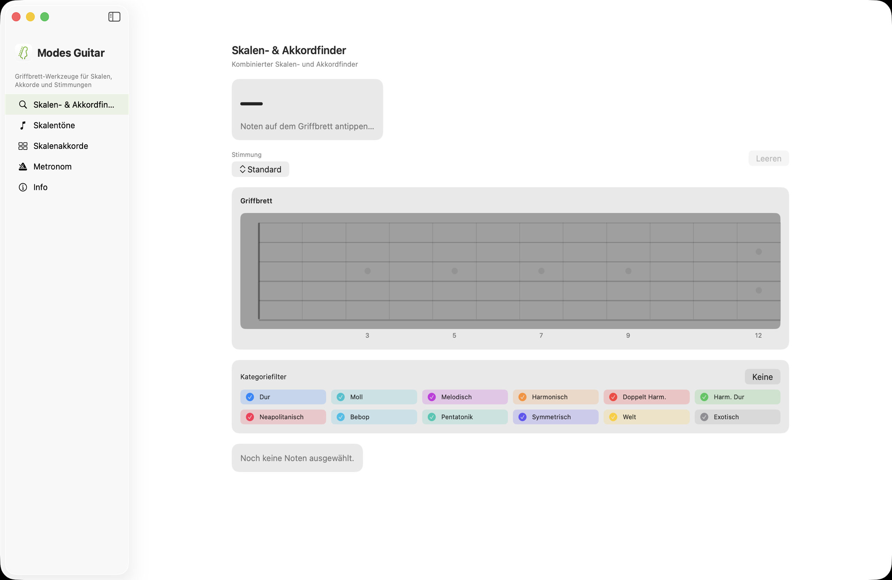
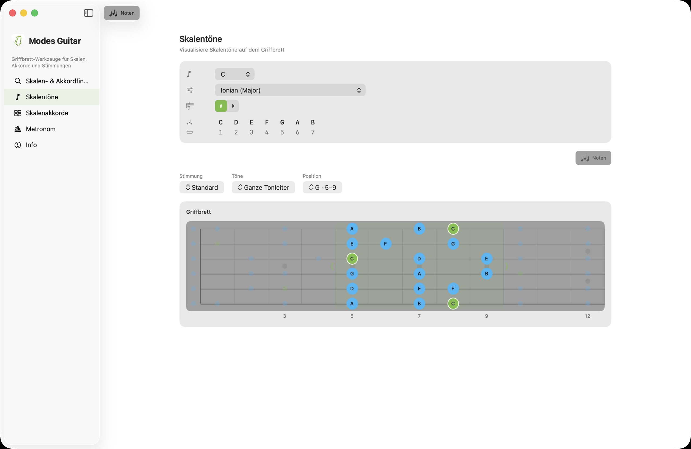
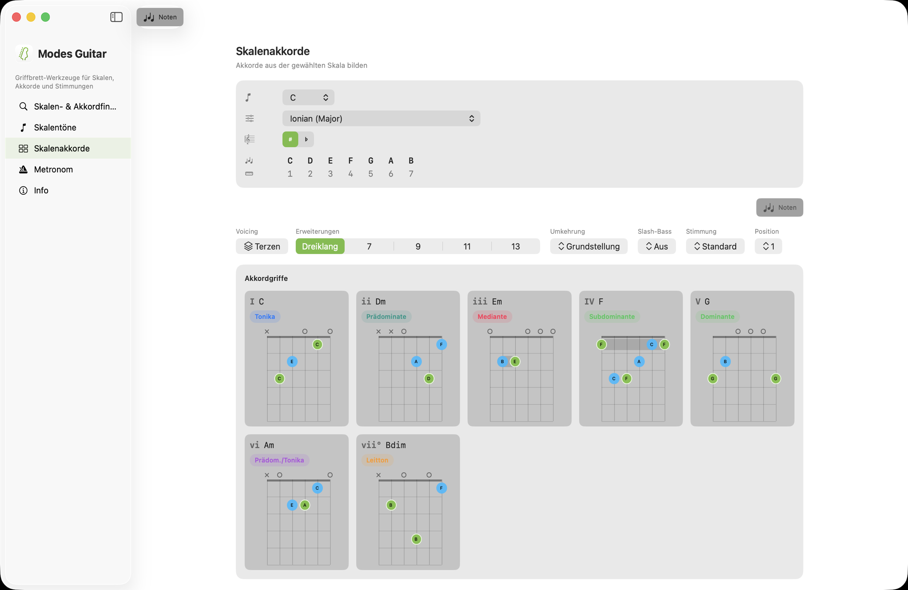
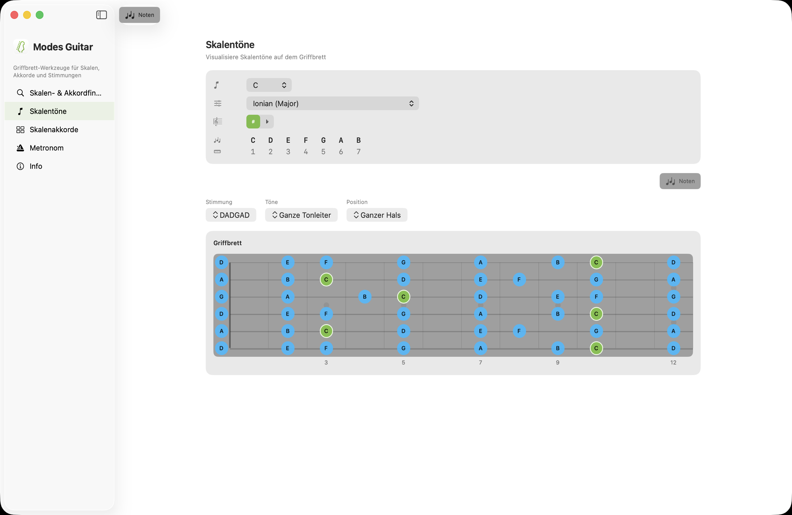
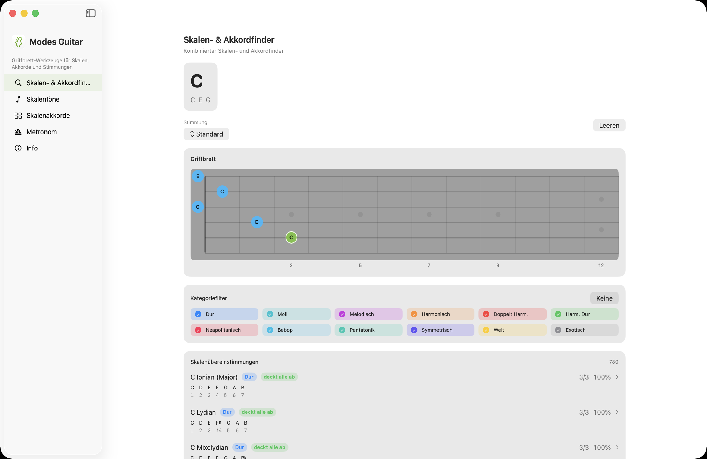
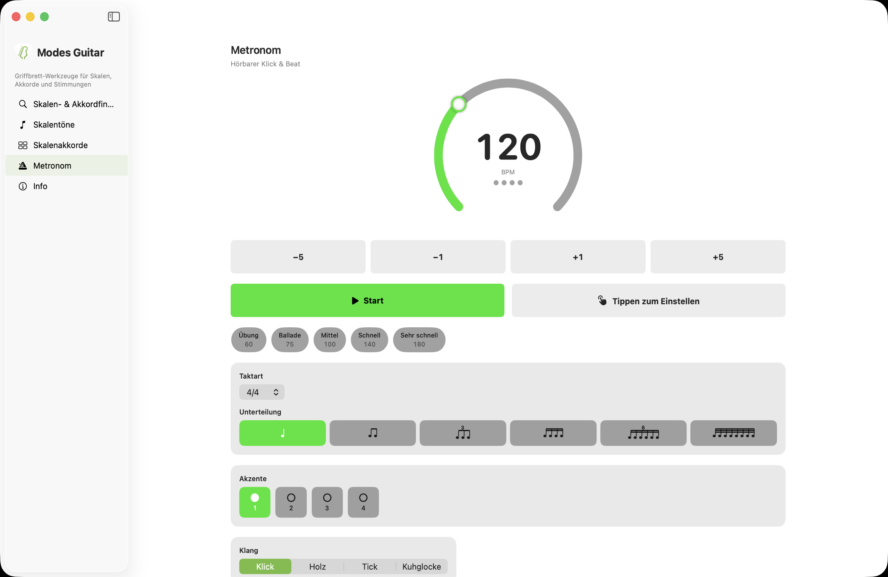
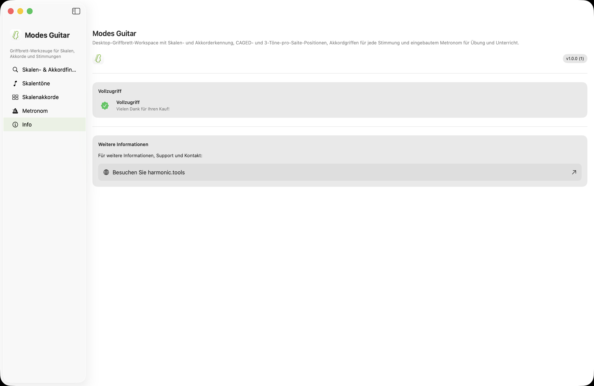

Modes Guitar für macOS
Ein Griffbrett-Arbeitsplatz für den Mac. Tippen Sie die Töne an, die Sie greifen, um herauszufinden, was Sie spielen, legen Sie jede Tonleiter in CAGED- oder Drei-Töne-pro-Saite-Positionen an, durchsuchen Sie spielbare Akkordgriffe in jeder Stimmung und üben Sie alles mit einem integrierten Metronom in einer Sidebar-App, die bequem neben Ihrer DAW oder Ihrem Unterrichtsplan Platz findet.
- Tonleiter- und Akkordsuche direkt auf dem Griffbrett
- CAGED- und Drei-Töne-pro-Saite-Positionen
- Spielbare Akkordgriffe in jeder Stimmung
- 20 Stimmungen plus Ihre eigene Stimmung
- Übungsmetronom und Widgets für die Mitteilungszentrale
Screenshots
Enthält Screenshots im hellen und dunklen Modus, die dem Design der Website folgen.








Funktionen
- Tonleiter- und Akkordsuche: Tippen Sie die Töne, die Sie greifen, direkt auf den Hals. Modes Guitar benennt den Akkord in Echtzeit Dur, Moll, vermindert, übermäßig, erweitert, Suspended und mehr und ordnet jede passende Tonleiter nach Tonabdeckung ein. Filtern Sie nach Tonleiter-Kategorie, um die Liste einzugrenzen, und springen Sie direkt zu den Akkorden dieser Tonleiter.
- Tonleitern auf dem Griffbrett: Wählen Sie einen Grundton und eine Tonleiter und sehen Sie zu, wie jeder Tonleiterton über den ganzen Hals aufleuchtet. Wechseln Sie zu CAGED-Positionen oder Drei-Töne-pro-Saite-Läufen, ziehen Sie ein Feld den Hals hinauf und hinunter, um die Position zu ändern, und grenzen Sie die Töne auf Dreiklang, Septakkord, Pentatonik oder die vollständige Tonleiter ein, um die Form hinter der Form zu sehen.
- Akkordgriffe: Jede Stufe der Tonleiter erhält echte, spielbare Griffe komplett mit Markierungen für leere und abgedämpfte Saiten, Barré-Anzeigen und einer Bundnummern-Spalte, wenn der Griff weiter oben am Hals liegt. Schreiten Sie die Positionen entlang des Halses durch, wählen Sie eine Umkehrung oder zwingen Sie jeden Tonleiterton in den Bass für Slash-Akkorde.
- 20 Stimmungen, plus Ihre eigene: Standard, Drop D, Drop C, E♭ Standard, DADGAD, Open G, Open D, Siebensaiter, Bariton, vier- und fünfsaitiger Bass, Ukulele, Banjo (fünfsaitig, Tenor und Plektrum) und Mandoline. Griffe, Formen und Tonnamen werden für die gewählte Stimmung neu berechnet, und beim Umstimmen bleibt Ihr Fingersatz erhalten, sodass Sie hören, was aus derselben Form wird. Oder erstellen Sie Ihre eigene: Wählen Sie 3 bis 8 Saiten und stimmen Sie jede nach Gehör, ausgehend von einer beliebigen Vorlage.
- Übungsmetronom: Ein vollwertiges Metronom ist mit dabei: Taktarten, Unterteilungen, Swing, Akzente pro Schlag, vier Klick-Klangfarben, einstellbare Lautstärke und Haptik sowie schnelle Tempi und gespeicherte Vorlagen für die Passagen, die Sie üben.
- Widgets: Behalten Sie das Metronom in der Mitteilungszentrale und starten oder stoppen Sie es, ohne die App zu wechseln, und erhalten Sie eine frische Tonleiter des Tages und einen Akkord des Tages zum Üben.
Für Gitarristen entwickelt
- Läuft vollständig auf dem Gerät kein Konto, keine Werbung, kein Tracking
- Keine Internetverbindung erforderlich
- Helle und dunkle Darstellung durchgehend
- Eine Sidebar-App, die neben Ihrer DAW oder Ihrem Unterrichtsplan Platz findet
- In 11 Sprachen lokalisiert
Ob Sie Gitarrist sind und Modi lernen, Bassist und eine neue Stimmung kartieren, Lehrkraft und Übungen erstellen oder Songwriter auf der Suche nach dem nächsten Akkord Modes Guitar bringt das gesamte Griffbrett auf Ihren Mac. 7 Tage kostenlos testen nach dem Testzeitraum schalten Sie den vollen Zugriff mit einem einmaligen Kauf frei. Keine Abonnements.
Griffbrett- und Stimmungsreferenz
Eine vollständige Referenz der Stimmungen, Positionen, Akkordwerkzeuge und Metronom-Funktionen hinter der App.
Stimmungen
Griffe, Formen und Tonnamen werden für die gewählte Stimmung neu berechnet. Beim Umstimmen bleibt Ihr Fingersatz erhalten, sodass Sie hören, was aus derselben Form wird. Die Töne sind von der tiefen zur hohen Saite aufgeführt.
| Stimmung | Töne (tief → hoch) | Saiten |
|---|---|---|
| Standard | E A D G B E | 6 |
| Drop D | D A D G B E | 6 |
| Drop C | C G C F A D | 6 |
| E♭ Standard | E♭ A♭ D♭ G♭ B♭ E♭ | 6 |
| DADGAD | D A D G A D | 6 |
| Open G | D G D G B D | 6 |
| Open D | D A D F♯ A D | 6 |
| Seven-String | B E A D G B E | 7 |
| Baritone | B E A D F♯ B | 6 |
| Bass (4-String) | E A D G | 4 |
| Bass (5-String) | B E A D G | 5 |
| Ukulele | G C E A | 4 |
| Banjo (5-String) | G D G B D | 5 |
| Banjo (Tenor) | C G D A | 4 |
| Banjo (Plectrum) | C G B D | 4 |
| Mandolin | G D A E | 4 |
Erstellen Sie auch Ihre eigene Stimmung: Wählen Sie 3 bis 8 Saiten und stimmen Sie jede nach Gehör, ausgehend von einer beliebigen Vorlage.
Griffbrett-Positionen
Legen Sie jede Tonleiter über den Hals und ändern Sie, wie viel davon Sie sehen. Ziehen Sie ein Feld den Hals hinauf und hinunter, um die Position zu verschieben.
Positionssysteme
Ton-Teilmengen
Akkordgriffe
Jede Stufe der Tonleiter erhält echte, spielbare Griffe in der aktuellen Stimmung.
- Playable grips — open- and muted-string markers, barre indicators, and a fret-number gutter when the shape sits up the neck.
- Positions — step through the shapes along the neck.
- Inversions — choose which chord tone sits in the bass.
- Slash chords — force any scale tone into the bass.
Übungsmetronom
Ein vollwertiges Metronom für die Passagen, die Sie üben.
Widgets
Erreichen Sie das Metronom und eine tägliche Portion Theorie, ohne die App zu wechseln.